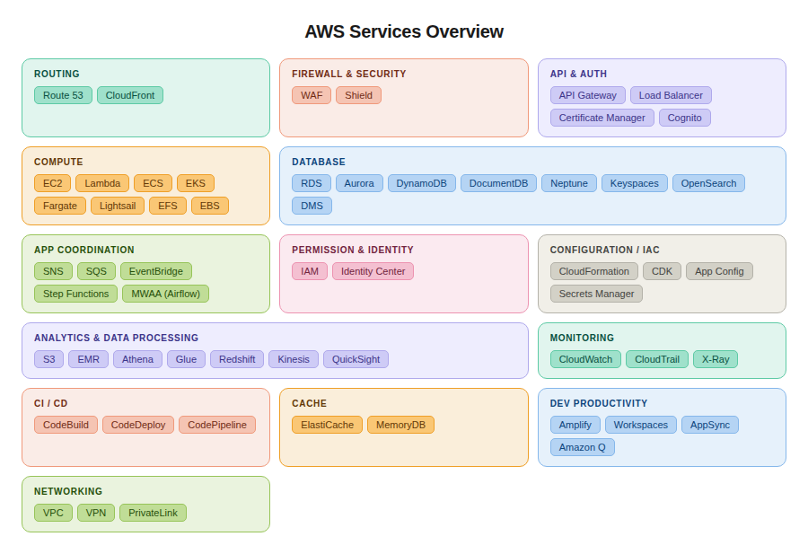

AWS Services
A quick-reference wiki covering the core AWS services you'll encounter when building and operating cloud applications.

Routing
| Service |
What it does |
| Route 53 |
DNS service — maps domain names to your AWS resources. Also handles health checks and traffic routing policies. |
| CloudFront |
CDN that caches your content at edge locations worldwide, reducing latency for end users. |
Firewall & Security
| Service |
What it does |
| WAF |
Web Application Firewall — filters malicious HTTP traffic (SQL injection, XSS) before it hits your app. |
| Shield |
DDoS protection. Standard is free; Advanced adds 24/7 response team support. |
API
| Service |
What it does |
| API Gateway |
Managed service to create, secure, and publish REST, HTTP, or WebSocket APIs at scale. |
| Load Balancer |
Distributes incoming traffic across multiple targets (EC2, containers, IPs) for availability and fault tolerance. |
| Certificate Manager |
Provisions and renews SSL/TLS certificates for free on AWS-hosted endpoints. |
| Cognito |
User authentication and authorization — handles sign-up, login, and OAuth for your apps. |
Compute
| Service |
What it does |
| EC2 |
Virtual machines in the cloud. Full control over OS, networking, and storage. |
| Lambda |
Serverless functions — run code in response to events without managing servers. |
| ECS |
Container orchestration using Docker. AWS manages the control plane; you manage the instances. |
| EKS |
Managed Kubernetes. Run K8s clusters without operating the control plane yourself. |
| Fargate |
Serverless compute for containers — run ECS/EKS tasks without provisioning EC2 instances. |
| Lightsail |
Simplified VMs with predictable pricing, aimed at simpler workloads and beginners. |
| EFS / EBS |
Shared file storage (EFS) and block storage volumes (EBS) that attach to EC2 instances. |
Database
| Service |
What it does |
| RDS |
Managed relational databases (MySQL, PostgreSQL, etc.) with automated backups and patching. |
| Aurora |
AWS's high-performance relational DB — MySQL/PostgreSQL compatible, up to 5× faster than standard RDS. |
| DynamoDB |
Serverless NoSQL key-value and document database with single-digit millisecond latency at any scale. |
| DocumentDB |
MongoDB-compatible managed document database. |
| Keyspaces |
Managed Apache Cassandra-compatible database for wide-column workloads. |
| Neptune |
Managed graph database for highly connected data (social graphs, recommendations). |
| OpenSearch |
Managed search and log analytics engine (Elasticsearch-compatible). |
| DMS |
Database Migration Service — migrates databases to AWS with minimal downtime. |
App Coordination
| Service |
What it does |
| SNS |
Pub/sub messaging — push notifications to many subscribers (email, SMS, Lambda, SQS). |
| SQS |
Managed message queue for decoupling services and smoothing out traffic spikes. |
| EventBridge |
Serverless event bus — routes events between AWS services and SaaS apps based on rules. |
| Step Functions |
Orchestrates multi-step workflows (state machines) across Lambda functions and AWS services. |
| MWAA (Airflow) |
Managed Apache Airflow for scheduling and monitoring data pipelines. |
Permission & Identity
| Service |
What it does |
| IAM |
Controls who (users, roles, services) can do what across all AWS resources. The foundation of AWS security. |
| Identity Center |
Single sign-on (SSO) for managing access across multiple AWS accounts and business apps. |
Analytics & Data Processing
| Service |
What it does |
| S3 |
Object storage used as the foundation of a data lake. It is durable, scalable, and cost-effective for storing large amounts of data.
- Buckets: Containers that store objects within a globally unique namespace. A bucket is similar to a top-level folder and can organize data using prefixes, which behave like subfolders.
- Objects: The actual files or data stored in buckets. Each object can be up to 5 TB. Objects can be accessed publicly by URL if permissions allow it, or programmatically through APIs such as get_object(bucket_name, key).
- Storage classes: Different storage options that help reduce costs depending on how often data is accessed. For example: Standard for frequently accessed hot data, Infrequent Access for less-used data, and Glacier for long-term archive storage. Glacier is cheaper but may have retrieval delays ranging from minutes to hours.
Lifecycle Rules automate the data movement process. A common lifecycle strategy is: Standard / Hot Data → Infrequent Access → Glacier / Cold Data.
- Security: |
| EMR |
Managed Hadoop/Spark clusters for large-scale data processing. |
| Athena |
Query S3 data with SQL — serverless, pay per query, no infrastructure needed. |
| Glue |
Serverless ETL service that discovers, prepares, and transforms data for analytics. |
| Redshift |
Managed data warehouse for petabyte-scale SQL analytics. |
| Kinesis |
Real-time streaming data ingestion and processing (think: live logs, click streams). |
| QuickSight |
AWS's BI tool for building dashboards and visualizations from your data sources. |
Monitoring
| Service |
What it does |
| CloudWatch |
Metrics, logs, and alarms for all AWS services. The primary observability tool on AWS. |
| CloudTrail |
Records API activity across your account — essential for auditing and security investigation. |
| X-Ray |
Distributed tracing — visualizes request flows across microservices to identify bottlenecks. |
CI/CD
| Service |
What it does |
| CodeBuild |
Managed build service — compiles code, runs tests, and produces deployable artifacts. |
| CodeDeploy |
Automates application deployments to EC2, Lambda, or on-premises servers. |
| CodePipeline |
Full CI/CD pipeline orchestrator — connects source, build, test, and deploy stages. |
Configuration (Infrastructure as Code)
| Service |
What it does |
| CloudFormation |
Deploy and manage AWS infrastructure using YAML/JSON templates. AWS's native IaC tool. |
| CDK |
Cloud Development Kit — define infrastructure in real code (TypeScript, Python, etc.) that compiles to CloudFormation. |
| App Config |
Manage and deploy application configuration separately from code, with safe rollout controls. |
| Secrets Manager |
Store, rotate, and retrieve secrets (API keys, DB passwords) securely. |
Cache
| Service |
What it does |
| ElastiCache |
Managed in-memory caching with Redis or Memcached — speeds up database-heavy applications. |
| MemoryDB |
Redis-compatible database with durability — acts as both a cache and a primary data store. |
Dev Productivity
| Service |
What it does |
| Amplify |
Full-stack platform for building and deploying web/mobile apps with CI/CD built in. |
| Workspaces |
Managed virtual desktops (VDI) in the cloud. |
| AppSync |
Managed GraphQL API service with real-time and offline capabilities. |
| Amazon Q |
AI-powered assistant for developers — code generation, debugging, and AWS-specific guidance. |
Networking
| Service |
What it does |
| VPC |
Virtual Private Cloud — your isolated network in AWS where you control subnets, routing, and access. |
| VPN |
Encrypted tunnel connecting your on-premises network to your AWS VPC. |
| Private Link |
Securely expose services to other VPCs or AWS accounts without traffic crossing the public internet. |